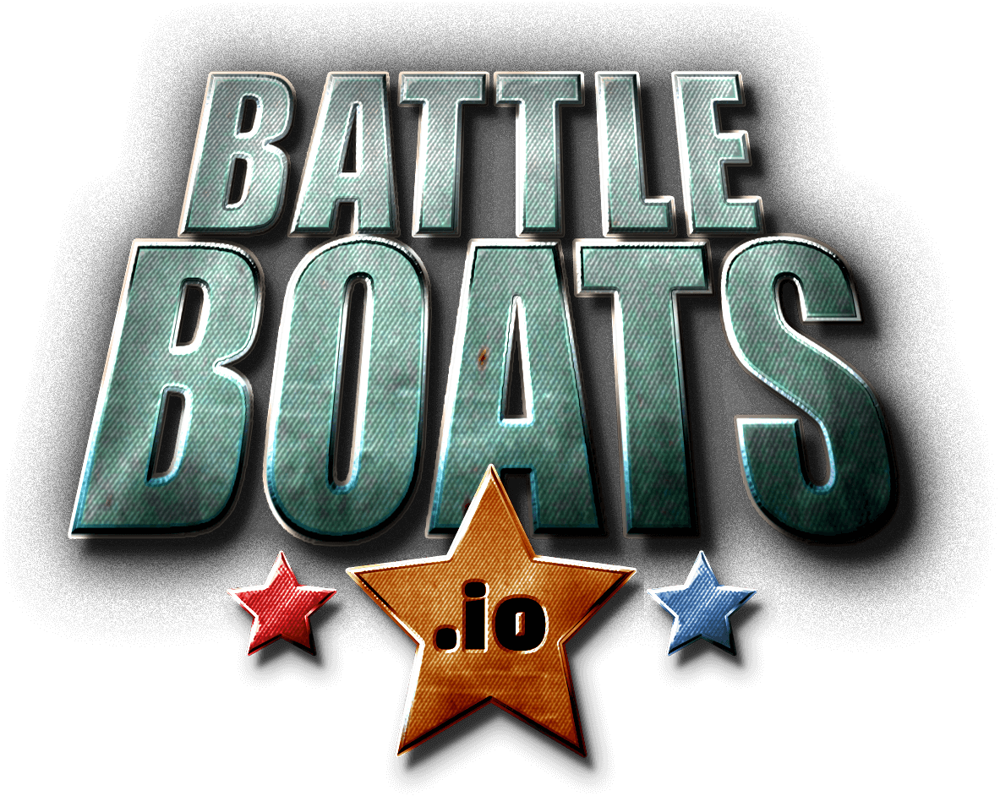
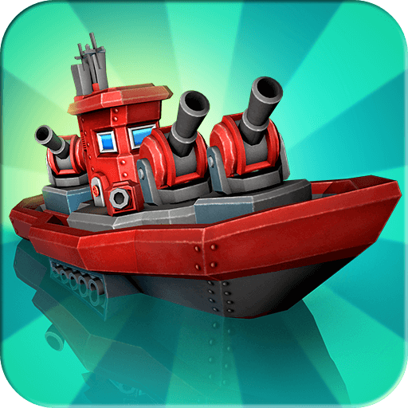

Introduction
Battleboats.io is a thrilling real-time multiplayer naval strategy game that reinvents the classic Battleship experience for the browser. Unlike traditional turn-based grid games, Battleboats.io thrusts you into dynamic oceanic arenas where you must actively navigate your captain's vessel while simultaneously hunting down hidden enemy fleets. What makes it truly unique is the seamless blend of tactical grid deduction and fast-paced .io action. Players love it because it demands both the analytical mind of a Battleship veteran and the quick reflexes of an arcade shooter. You will deploy your own fleet, upgrade your cannons and torpedoes, and engage in explosive real-time combat against global adversaries. It is a perfect mix of strategy, tension, and maritime domination.
Getting Started

Starting your naval career in Battleboats.io is incredibly simple since it runs directly in your browser. First, visit the official site and click to spawn into the vast ocean arena. Your initial phase involves the classic Battleship mechanic: strategically placing your fleet of varying sizes onto your hidden grid to protect them from enemy fire. Once deployed, the real-time action begins. Use the WASD keys or your mouse to navigate your flagship across the open waters. Left-click to fire your main cannons at suspected enemy coordinates, and use number keys or UI buttons to launch specialized weapons like torpedoes and deploy defensive mines. The core mechanic revolves around balancing offensive grid-hunting with evasive maneuvers. As you sink enemy ships and survive, you will gather resources to upgrade your vessel's speed, armor, and firepower. Your primary objective is to sink the opponent's entire fleet before they obliterate yours, making every movement and shot a critical decision in this high-stakes maritime duel.
Basic Tips
1. **Optimize Fleet Placement**: When setting up your hidden grid, avoid placing ships in predictable patterns or touching the edges. Space them out to prevent a single lucky enemy torpedo strike from grazing multiple vessels. 2. **Master the Hunt Pattern**: When firing at the enemy grid, use a checkerboard or diagonal spacing pattern. This maximizes your coverage area, ensuring you don't waste shots on adjacent squares once you've ruled out a ship's presence. 3. **Utilize Sonar and Mines**: Don't just rely on cannons. Deploy mines around your flagship's blind spots to deter aggressive rushers, and use sonar pings to reveal hidden enemy movements before committing your main firepower. 4. **Prioritize Upgrades Wisely**: Early in the match, focus on upgrading your ship's speed and mobility. Being able to dodge incoming torpedoes is often more valuable than raw firepower, keeping your flagship alive to secure the final sinkings.
Advanced Strategies

1. **Predictive Torpedo Leading**: Since Battleboats.io features real-time movement, enemies will try to dodge your grid shots. When firing torpedoes, aim not at their current position, but at their predicted trajectory based on their evasive patterns. 2. **The Decoy Maneuver**: Intentionally leave a small, seemingly vulnerable gap in your defensive formation to bait enemy torpedoes. When they commit their heavy weapons, use your superior speed to flank and counter-attack their exposed side. 3. **Grid Compression Tactics**: Once you land a single hit on an enemy ship, immediately switch your cannon fire to a tight, concentrated cluster around that exact coordinate rather than spreading out. This compresses their possible ship orientations and guarantees a faster sink. 4. **Resource Denial**: If you notice an opponent focusing heavily on upgrading their firepower, use your mobility to harass their resource-gathering zones or intercept their supply drops, stifling their late-game advantage.
Pro Tips
1. **Psychological Grid Placement**: Place your largest, most critical ships in the exact center of your grid, but surround them with smaller, seemingly decoy placements that mimic the shape of larger vessels to trick enemy deduction algorithms. 2. **Rhythm Breaking**: Never fire your cannons at a constant, predictable interval. Vary your shooting rhythm to disrupt the enemy's ability to track your muzzle flash and calculate your ship's exact coordinates for a counter-strike. 3. **Mine Chaining**: Instead of dropping mines randomly, chain them in narrow chokepoints or along the map's natural borders. This forces enemies into predictable paths where your torpedoes can easily finish them off.
Conclusion
Battleboats.io brilliantly merges the cerebral tension of classic grid-based naval combat with the adrenaline-pumping action of real-time .io gameplay. Whether you are outsmarting opponents with tactical grid deductions or dodging torpedoes in intense ship-to-ship duels, every match offers a unique maritime challenge. Set sail today, upgrade your fleet, and prove your tactical supremacy on the high seas!